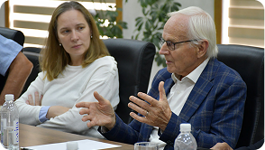
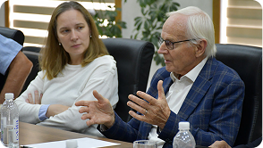
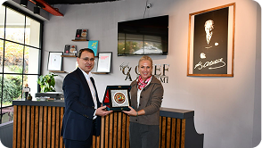
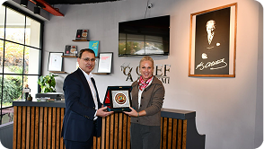

Xalqaro hamkorlik
Milliy malaka tizimini rivojlantirish instituti tomonidan Xalqaro hamkorlik yo‘nalishida bir qator ishlar
amalga oshirilgan. Xususan:
- 2024-yil 15-17-oktyabr kunlari Bishkek shahrida DARYA loyihasi doirasida “Markaziy
Osiyoda ko‘nikmalar va malakalar bo‘yicha mintaqaviy hamkorlik vaziyatlari” mavzusida
o‘tkazilgan mintaqaviy seminarda ishtirok etildi.
- 2024-yil 5-7-noyabr kunlari Fransiyaning Lion shahrida ETF (European Training
Foundation) tomonidan tashkil etilgan “Norasmiy va informal ta’limni tan olish”
mavzusidagi tajriba almashish tashrifi o‘tkazildi.
- 2024-yilning 4-5-dekabr kunlari Toshkent shahrida ETF ishtirokidagi DARYA loyihasi doirasida
o‘tkazilgan yuqori darajadagi guruh yig‘ilishida qatnashildi. Yig‘ilishda Markaziy Osiyo davlatlari
ta’lim va mehnat vazirliklari rahbar o‘rinbosarlari, Yevropa Ittifoqi rasmiylari, shuningdek, Yevropa
tiklanish va taraqqiyot banki, Osiyo taraqqiyot banki va YUNISEF kabi xalqaro tashkilotlar faol ishtirok
etdilar.
- Joriy yilning 14-aprelida Institut rahbariyati tomonidan Jahon banki missiyasi bilan uchrashuv
o‘tkazildi. Suhbat davomida 2026–2030 yillarga mo‘ljallangan «Oliy ta’limni transformatsiya qilish:
samarali boshqaruv va sifatni ta’minlash» loyihasi (taxminan 110 mln. AQSH dollari) atroflicha muhokama
qilindi. Shuningdek, mazkur tashabbusda Institut va Ta’lim sifatini ta’minlash milliy agentligining faol
ishtirok etish masalalari ham ko‘rib chiqildi.
- 2025-yilning 22-mayida Institut va YUNESKO xalqaro tashkiloti hamkorligida “Milliy malaka tizimini
rivojlantirishdagi joriy holat va istiqbolli vazifalar” mavzusida xalqaro ilmiy-amaliy konferensiya
o‘tkazildi. Konferensiyada 100 dan ortiq xorijiy va mahalliy ekspertlar, tarmoq kengashlari a’zolari,
shuningdek, xalqaro va milliy ta’lim tashkilotlari vakillari ishtirok etdi. Tadbir doirasida taqdim
etilgan maqola va tezislar to‘plami tayyorlandi va konferensiya qatnashchilari o‘rtasida tarqatildi.
- Shveysariyaning HELVETAS kompaniyasi, Ta’lim sifatini ta’minlash milliy
agentligi hamda Institut hamkorligida “Kasbiy standartlar asosida natijaga yo‘naltirilgan ta’lim
dasturlarini ishlab chiqish bo‘yicha uslubiy qo‘llanma” yaratildi.
- Milliy malaka tizimini rivojlantirish doirasida Turkiya, Albaniya, Estoniya, Rossiya va Qozog‘iston
davlatlarining milliy malaka tizimini rivojlantirishga mas’ul organlari bilan hamkorlik
memorandumi imzolandi.
- Yevropa ta’lim fondining DARYA loyihasi 2-moduli doirasida 3 ta mintaqaviy kasbiy standartlar ishlab
chiqildi. Shu bilan birga, 3 ta milliy kasbiy standartlar loyihasi shakllantirildi va hozirda
ularni validatsiya tizimini shakllantirishga qaratilgan navbatdagi loyihaga ishtirok etishga rozilik
berildi.
 

 
